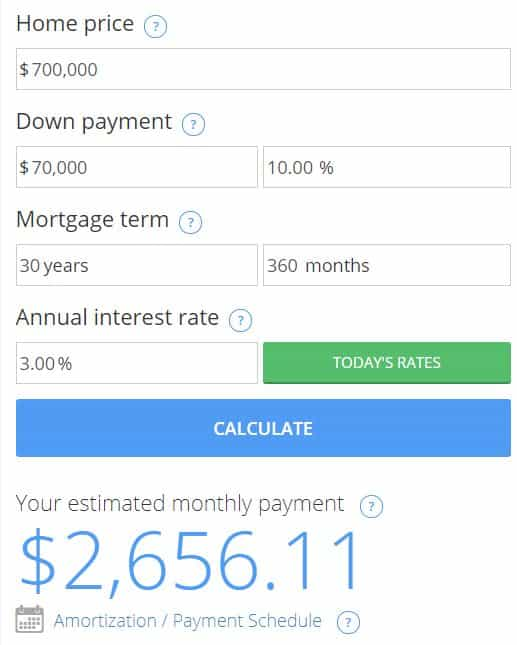

Kyle is an entrepreneur and nomad who has been living abroad since 2016. He blogs at This Is Trouble. Follow him on Facebook.


In February of 2016, I walked out of my corporate job for the final time to my new life of freedom. I anticipated several years of being a poor digital nomad, scraping by with $1,000-$2,000 a month until my businesses got some traction, or I had to return to the rat race.
But things ended up way better than that within a short time period. So much so, that I began to research the idea of buying a home in one of my favorite adopted Eastern European cities. The criteria was relatively simple:
This left me with the Czech Republic, Hungary, and Poland. All are places I enjoy. The simple goal of this investment was to buy a property in up-and-coming areas that will likely continue to grow over the years. The plan was to Airbnb it out for most of the year, and maybe live in it sometimes myself. Or, depending on local laws, simply rent it out to a local on a yearly lease and try to eek out a bit of profit.
I was not looking to get rich off of this. I merely hoped for maybe a couple hundred dollars profit a month, and to get in before prices potentially skyrocket in a few years. I am okay with even taking a small monthly loss on it, if it came to it.

Note: I realize these numbers below are applicable to California, and that the situation is vastly different in other parts of the US.
As the end of 2017 approaches, I realize what a shitty situation many college graduates are truly in. To give some perspective, my parents bought their first house at 25. I was born when my father was 27 and mom was 26. To buy that first modest honest in a California suburb, I believe they paid about $250,000. They received the down-payment as a gift from one side of grandparents.
My first job in San Diego, post-graduation, paid me $54,000 a year. My take home pay off of that was $2,800 a month, or $33,600. I’d usually receive a bit back in tax returns at the end of the year, so let’s round up to $36,000.
When I lived in Los Angeles and worked as an engineer, I made $86,000. My take home pay off of that was $4,400 a month, or $52,800 a year. I’d usually receive a bit back in tax returns at the end of the year, so let’s round up to $55,000.
To buy that same house now that my parents bought in 1990 would probably cost upwards of $700,000. Let’s say I managed to put 10% of that home price down, plus get a 3% mortgage rate over 30 years. The numbers look something like this (keeping in mind a take-home pay of $4,500):

Of course, getting $70,000 to put down on something isn’t even realistic. When making that $86,000 a year, the cost of living was so high that I only managed to save maybe $500 a month. At that rate, it would take me 140 months, or nearly 12 years, to save the down payment. This would have put me at roughly 37 years old, and who knows how the prices would look then.
We can agree on that, right? The lack of true gains in 9-5 pay, combined with the housing price rise over the years, has resulted in your average college graduate being completely priced out of the housing market. I don’t think I need to make the argument that the true path to freedom these days is to build your own business or income stream—one way or another.
So, in my case, I did exactly that. I’m now making more money from online business than I ever did in a corporate job (more than double). Except now, because I’m self-employed, getting a loan from a bank to buy a home is completely out of the question. I’m not sure how the foreign banks will be, because I haven’t gotten that far in the process yet. But getting a loan from a US bank? Not gonna happen in a million years.
I would have never been able to save up enough money at my corporate job to afford a home, especially in California. So I migrated and built a business, and yet am still in the same position. Now, obviously this is wildly different circumstances—and there are many more nuances that go into buying property abroad. The easy solution is to just save the money and buy it in cash in a couple years, which is likely the route I’ll go. The other route is to start paying myself a “salary” from my company with me as the CEO, but that will still take at least a year or two of proving tax returns to qualify.
But truthfully, I don’t know know what’s going to happen to my generation. I don’t know a single soul who is roughly my age who owns a home. They’re all completely priced out of the market. It seems for the time being, most college grads are stuck in the ‘make 45k and rent forever’ market. And for the time being, it seems there isn’t an escape to that.
If you want to learn how to build a harem of hot girls the easy way, get my book. For the best advice about dating and mating abroad, listen to the podcast.
Read More: How High Will Men Jump To Get Married?